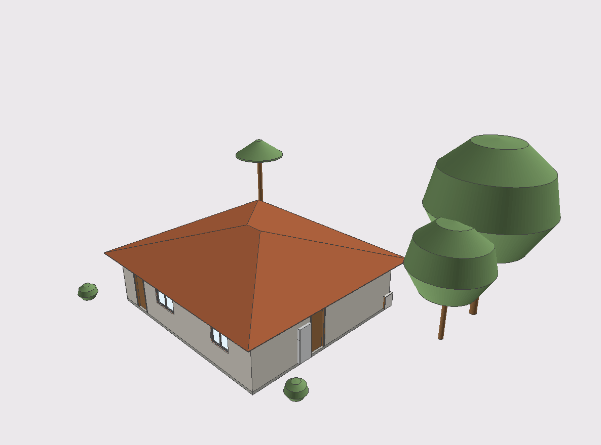
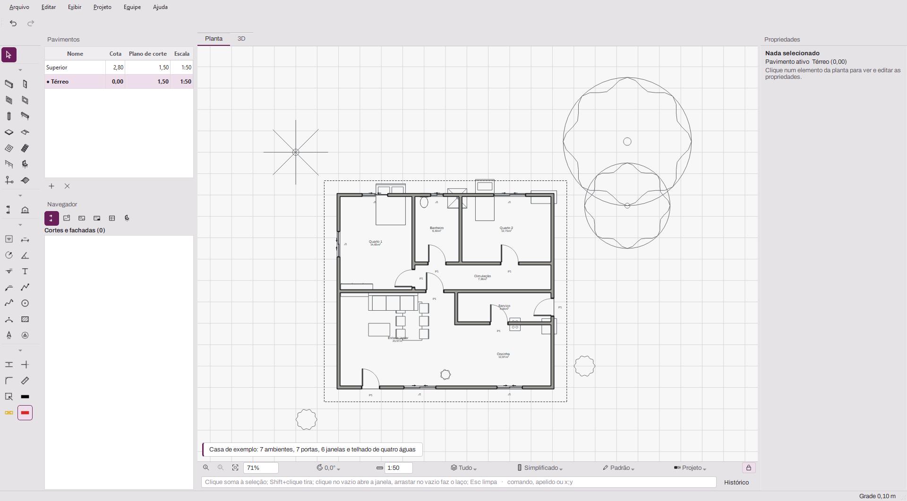
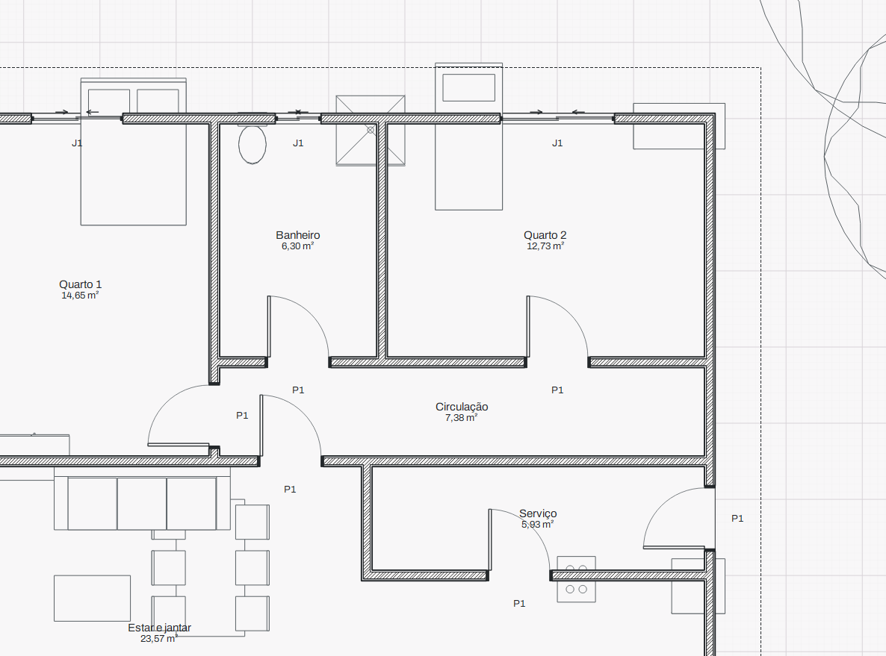
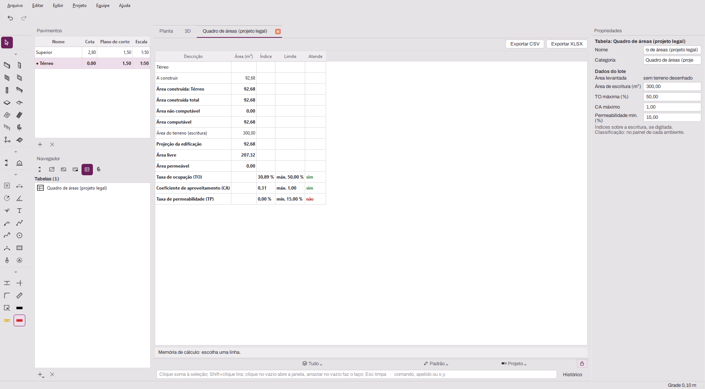

BrasBim
BIM aberto, em português, do jeito que o Brasil projeta.
Modele paredes, portas, lajes e coberturas em 3D e tire dali plantas, cortes, pranchas e o quadro de áreas da prefeitura. Gratuito, de código aberto, e o arquivo do projeto é IFC 4.3.
Versão 0.0.1, em desenvolvimento. Testado no Windows.

Modele em 3D, com elementos de verdade
Paredes retas e em arco com camadas e junções automáticas. Portas e janelas que abrem o vão sozinhas. Lajes, pilares, vigas, escadas e coberturas de uma, duas ou quatro águas. Ambientes detectados pelas paredes em volta, já com área.
Edite na planta ou direto no 3D, com as mesmas ferramentas, medidas digitadas junto ao cursor e desfazer sem limite.

Em português, do menu à linha de comando
Pavimentos, camadas, tabela de penas e vistas salvas, com nomes que o projetista brasileiro já usa. A linha de comando aceita comandos e apelidos em português e coordenadas no formato x;y. Metro, vírgula decimal e as escalas de sempre: 1:50, 1:100, 1:200.
Do modelo à prancha da prefeitura
Plantas, cortes e fachadas saem do modelo e acompanham cada mudança. A documentação segue a NBR 6492 e a NBR 16752: pranchas de A0 a A4 com folhas mestras, PDF vetorial e exportação para DWG e DXF.


Projeto legal
Marque a situação de cada elemento (a construir, existente, a demolir, a regularizar) e a planta assume as cores e hachuras da sua prefeitura. Já vêm prontos os perfis Genérico, Araras/SP, Jacareí/SP, São Paulo/SP e Curitiba/PR. O perfil é um arquivo aberto: dá para criar o da sua cidade.
Seu projeto é seu
O arquivo que você salva é um .ifc, o formato aberto da
buildingSMART (ISO 16739). Não existe formato próprio escondido nem uma
exportação com perdas no fim do projeto.
Qualquer programa que lê IFC abre o seu trabalho, hoje ou daqui a vinte anos. Paredes, portas e ambientes usam as classes e propriedades do próprio IFC, e cada elemento guarda a mesma identidade ao salvar, reabrir e trocar arquivos.
casa-exemplo.ifc FILE_SCHEMA(('IFC4X3_ADD2')); #118=IFCWALL('3vB2YO$MX4xv5uCqZZG05x',#5,'Parede 14',$,$,#140,#152,$,.STANDARD.); #201=IFCDOOR('1hqIFTRjfV6AWq_bMtnZwI',#5,'P1',$,$,#208,#215,$,2.10,0.80,.DOOR.,.SINGLE_SWING_LEFT.,$); #260=IFCSPACE('0KvG_vSPv3HP_n2Hd6pKqc',#5,'1',$,$,#266,#271,'Quarto 1',.ELEMENT.,.INTERNAL.,$); #301=IFCPROPERTYSET('2Rl$ff1Q19qOAP3KPLa8Pd',#5,'Pset_WallCommon',$,(#302,#303)); #302=IFCPROPERTYSINGLEVALUE('IsExternal',$,IFCBOOLEAN(.T.),$); #303=IFCPROPERTYSINGLEVALUE('LoadBearing',$,IFCBOOLEAN(.F.),$);
O que já faz
- Modelagem
- Paredes, portas, janelas, lajes, pilares, vigas, coberturas, escadas, guarda‑corpos, terreno por curvas de nível, eixos e ambientes com área.
- Objetos
- Objetos paramétricos com tipos e fórmulas, editor com prévia e biblioteca de mobiliário, louças, eletrodomésticos e vegetação.
- Precisão
- Atração a pontos, linhas guia, medidas digitadas junto ao cursor e linha de comando em português.
- Vistas
- Planta simplificada ou por camadas, 3D com edição direta, lado a lado, vistas salvas, camadas e tabela de penas.
- Documentação
- Cotas que acompanham as paredes, cortes e fachadas do modelo, pranchas A0–A4 e PDF vetorial.
- Tabelas
- Quantitativos de esquadrias, áreas, paredes e estrutura, com exportação para CSV e XLSX.
- Interoperabilidade
- IFC 4.3 nativo. Importa DWG e DXF como referência e exporta DWG e DXF com as camadas do projeto.
- Equipe
- Projeto compartilhado na rede do escritório, sem servidor, com reserva de elementos.
- Assistente
- Protótipo: uma IA instalada por você desenha no modelo por um protocolo aberto (MCP). O BrasBim não embute nem revende IA.
Baixar o BrasBim
O BrasBim está na versão 0.0.1. Já modela e documenta uma casa inteira, mas ainda não tem versão estável. É uma boa hora para testar e contar o que achou.
Hoje ele é testado no Windows. Linux e macOS são o objetivo, mas ainda não foram validados.
Instalar a partir do código
- Instale o Python 3.12 ou mais novo.
- Baixe o código e entre na pasta:
git clone https://github.com/Ottopaz/BrasBim.git cd BrasBim - Crie o ambiente e instale:
python -m venv .venv .venv\Scripts\activate pip install -e ".[dev,ui]" - Abra o programa:
brasbim
Livre, sem licença para renovar
Sem assinatura e sem limite de instalações. O código pode ser lido, auditado e melhorado por qualquer pessoa.
| Núcleo BIM, sem interface | LGPL‑3.0‑or‑later |
|---|---|
| Aplicativo | GPL‑3.0‑or‑later |
| Biblioteca de objetos | CC BY 4.0 |
Participe
Cada recurso nasce de uma especificação escrita e revisada antes do código, e tem teste automático que confere o IFC gerado. São mais de 900 testes hoje. Tudo isso é público, e há lugar para quem quiser ajudar.
-
Teste e relate problemas
Use num projeto de verdade e conte o que faltou ou deu errado.
-
Escreva especificações
Descreva como um recurso deve funcionar, com base em normas e fontes públicas.
-
Contribua com código
Python, IfcOpenShell e Qt. Spec aprovada antes, commits assinados com
git commit -s. -
Desenhe objetos
Mobiliário, louças e vegetação para a biblioteca aberta, em CC BY 4.0.
O BrasBim é desenvolvido em clean‑room: nada é copiado nem obtido por engenharia reversa de software proprietário. Ícones, nomes de comandos e telas são próprios.